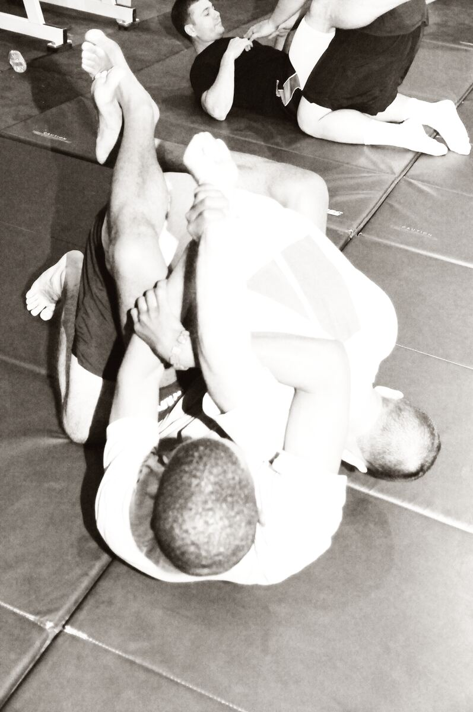

BJJ · Submission
Kimura
The kimura is a Brazilian jiu-jitsu shoulder lock that isolates an arm with a figure-four grip and rotates it behind the opponent’s back—used as both a submission and a control/sweep engine from guard, side control, and many other positions in gi and no-gi.
What Is the Kimura?
Named in BJJ culture after Masahiko Kimura’s historic lock against Hélio Gracie, the kimura (udi garami family) is a figure-four grip on the opponent’s wrist and arm that rotates the shoulder. It appears from closed guard, half guard, side control, north-south, turtle, and standing clinches.
Modern teaching treats it as a system: finish, sweep, or back take depending on their defense.
How Kimura Works
Secure the wrist, complete the figure-four (your hands meeting on their arm), pin their wrist to the mat or your chest line, and rotate their hand toward the ear behind the back while controlling the near elbow. Pinch your elbows; do not let the figure-four float.

Gi vs No-Gi
Gi. Sleeve grips help you start the isolation; pants can pin hips during bottom kimuras.
No-gi. Bare wrist control and tighter body connection replace sleeves. Top kimuras from side control are especially common.
Sweeps. Both rule sets use the kimura to off-balance; no-gi often converts faster to the back when they roll.
>What Does the Kimura Look Like in Practice?
From closed guard, Alex breaks posture, grabs Jordan’s wrist, completes the figure-four, opens the guard, and rotates for the finish—or uses the grip to sweep when Jordan posts.
Types / Variations
From closed / open guard
Classroom kimura after a posted hand; details on wrist vs forearm matter.
From side control and north-south
Step over or pin the wrist low toward the hip, then rotate.
Kimura as a system
If they roll, follow to north-south or the back; if they hide the arm, switch to armlocks or keep control.
Entries, Counters, and Escapes
Enter on posted hands, underhooks they give up, or turtled arms. Escape by clasping hands, hiding the elbow, or turning into the lock early—late stages need taps.
Kimura vs Americana
| Factor | Kimura | Americana |
|---|---|---|
| Rotation | Arm behind the back | Arm toward the head / up |
| Common homes | Guard, side control, turtle | Mount, side control |
| Grip | Figure-four (same family) | Figure-four (same family) |
| Feel | Bend + rotate down/back | Paintbrush upward rotation |
Special Considerations
IBJJF, ADCC, and sport context
Legal adult IBJJF/ADCC shoulder lock. Youth rules vary—check the book.
Safety
Tap early. Do not explode through a stubborn shoulder in drilling.
Common mistakes
- Grabbing the forearm instead of the wrist.
- Loose elbows on the figure-four.
- Only hunting the tap and missing sweep/back options.
FAQ
Questions we hear on the mats, in forums, and under instructional videos—answered in Martial Index voice.
Kimura or chicken wing?
Same broad family; kimura is the BJJ/judo sport name most gyms use.
Why can’t I finish from guard?
Posture and wrist details—pinch elbows, control the real wrist, create angle.
Is kimura better than americana?
Different rotations and homes. Learn both. See americana.
Can I use it in no-gi?
Absolutely—often more as top control and back-take engine.
Named after Kimura—true story?
The BJJ naming memorializes Masahiko Kimura’s lock in the 1951 match with Hélio Gracie.
Safe for white belts?
Yes with early taps and supervised drilling.
Kimura from half guard?
Very common—top and bottom variants exist.
The Bottom Line
The kimura is a figure-four shoulder lock and control system—finish, sweep, or take the back. Opposite rotation from the americana, fully alive in gi and no-gi.